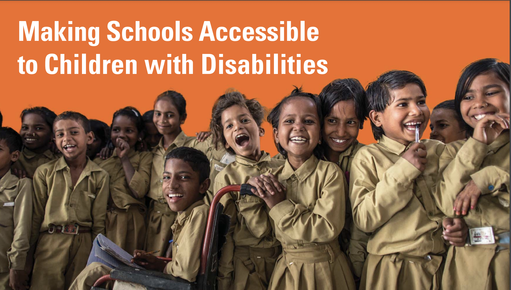

We explore into the archictural guide for accessible schooling and the progress of making education accessible to students in South Asia. By examining the disparities in current educational facilities and proposing actionable guidelines, this thesis argues that mandated inclusive design training for architects and educators, alongside the development of comprehensive design standards, can significantly enhance the accessibility and effectiveness of educational environments.
Inclusive design in education ensures that educational environments are accessible and supportive for all students irrespective of their abilities. It involves inclusive teaching practices, resources, and curricula designed to engage every student and is founded on universal design for learning principles.
The study underscores the importance of integrating inclusive design principles into architectural education and practice to enhance access and participation for all students, particularly those with physical disabilities.